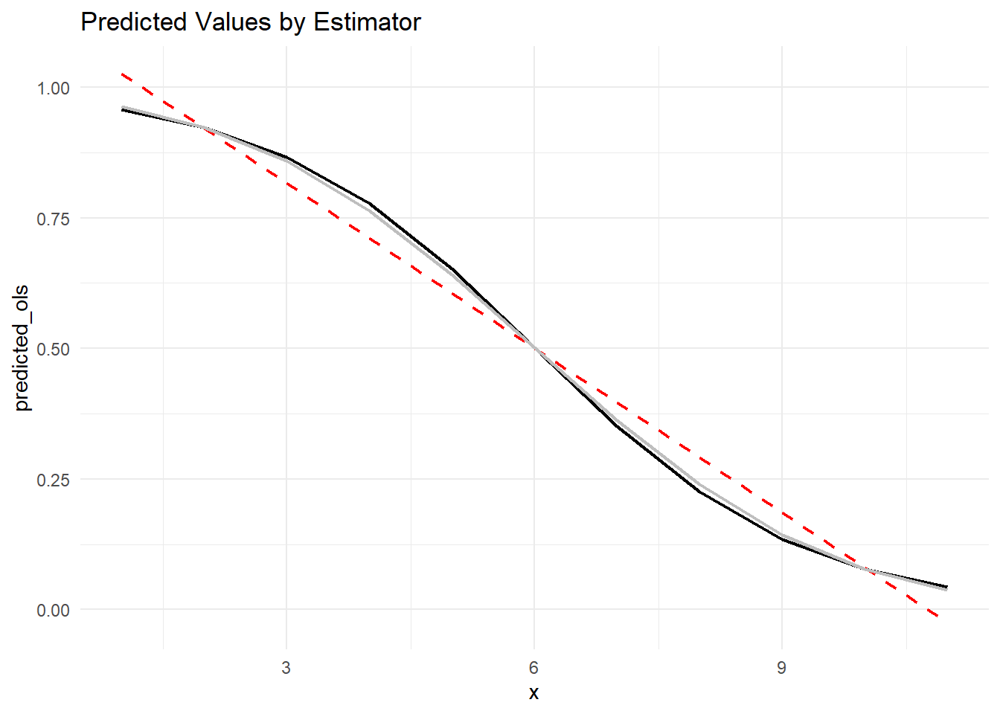
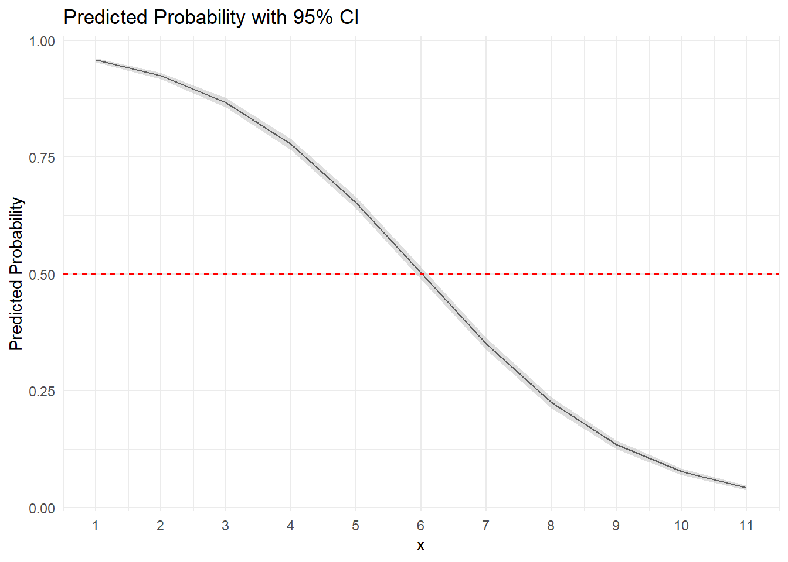

We are going use the binomial distribution to simulate a dichotomous dependent variable, y, with a known relationship to an independent variable, x. We will then estimate the relationship using OLS, logistic, and probit regressions and compare the results. Along the way, we will talk about the differences in the modeling approaches.
Let’s start with simulating some data for our analysis.
# Create X as a sequence from 1 to 11X <-1:11# Define the probabilities for Y = 1 at each X value with steeper relationship in middle and flatter at edgesprobabilities <-c(0.95, .925, .875, 0.8, .7, 0.5, 0.3, 0.2, 0.125, .075, 0.05)# Simulate data with binomial distribution for Ysample <-1000# Number of trials for each x # Create an empty data frame to store the resultssimulated_data <-data.frame(X =numeric(),Y =numeric(),stringsAsFactors =FALSE)# Simulate Y=1 probabilistically for each X value iterationfor (i in1:sample) {# Sample Y=1 probabilistically at each X value simulated_Y <-sapply(probabilities, function(p) sample(c(0, 1), size =1, prob =c(1- p, p))) #Probabilistically draw 1 | 0 at the specified probability level # Create a data frame for the current iteration iteration_data <-data.frame(x = X, y = simulated_Y)# Append the current iteration data to the main data frame simulated_data <-rbind(simulated_data, iteration_data)}head(simulated_data) #Look at first few cases
x y
1 1 1
2 2 1
3 3 1
4 4 1
5 5 1
6 6 0
11.1.1 Reviewing Simulated Data
Using the group_by function from the tidyverse package, we check the probability that Y = 1 at each X level to see if the simulation worked as hoped. The results show that it did with P(Y=1∣X )roughly following the population parameters stipulated earlier.
With our simulated data, now we’ll estimate three separate regressions changing the Generalized Linear Model (GLM) type using: Logistic, Probit, and OLS.
The two models, logistic and probit, are designed to work with dichotomous DVs and should work better with our simulated data compared to the OLS estimator (which assumes a normal distribution). We use GLMs to estimate all three models, including the OLS, to more easily compare model fit across estimators. Both the logitistic and probit models use the family=binomial argument in the code but have the different link functions to account for the different calculations. The OLS GLM model uses the Gaussian distribution family with the standard identity link function.
We estimate each of the three models than compare the results using the stargazer package.
# Logistic regressionlogit <-glm(y ~ x , data = simulated_data, family =binomial(link ="logit"))summary(logit)
Call:
glm(formula = y ~ x, family = binomial(link = "logit"), data = simulated_data)
Coefficients:
Estimate Std. Error z value Pr(>|z|)
(Intercept) 3.73811 0.07101 52.65 <2e-16 ***
x -0.62191 0.01101 -56.47 <2e-16 ***
---
Signif. codes: 0 '***' 0.001 '**' 0.01 '*' 0.05 '.' 0.1 ' ' 1
(Dispersion parameter for binomial family taken to be 1)
Null deviance: 15249.2 on 10999 degrees of freedom
Residual deviance: 9465.7 on 10998 degrees of freedom
AIC: 9469.7
Number of Fisher Scoring iterations: 5
# Probit regressionprobit <-glm(y ~ x , data = simulated_data, family =binomial(link ="probit"))summary(probit)
Call:
glm(formula = y ~ x, family = binomial(link = "probit"), data = simulated_data)
Coefficients:
Estimate Std. Error z value Pr(>|z|)
(Intercept) 2.143882 0.036857 58.17 <2e-16 ***
x -0.356525 0.005632 -63.30 <2e-16 ***
---
Signif. codes: 0 '***' 0.001 '**' 0.01 '*' 0.05 '.' 0.1 ' ' 1
(Dispersion parameter for binomial family taken to be 1)
Null deviance: 15249.2 on 10999 degrees of freedom
Residual deviance: 9497.6 on 10998 degrees of freedom
AIC: 9501.6
Number of Fisher Scoring iterations: 4
# OLS regressionols <-glm(y ~ x, data = simulated_data, family =gaussian(link ="identity"))summary(ols)
Call:
glm(formula = y ~ x, family = gaussian(link = "identity"), data = simulated_data)
Coefficients:
Estimate Std. Error t value Pr(>|t|)
(Intercept) 1.131509 0.007640 148.11 <2e-16 ***
x -0.105100 0.001126 -93.31 <2e-16 ***
---
Signif. codes: 0 '***' 0.001 '**' 0.01 '*' 0.05 '.' 0.1 ' ' 1
(Dispersion parameter for gaussian family taken to be 0.1395644)
Null deviance: 2750.0 on 10999 degrees of freedom
Residual deviance: 1534.9 on 10998 degrees of freedom
AIC: 9559.1
Number of Fisher Scoring iterations: 2
The results show that x is a significant predictor of y across all three model estimation strategies, which it should be given the data generating process that created these data. However, the coefficients are interpreted differently in each of the three models. For the OLS model, the coefficient of -.105 reflects a linear estimation of how x is related to y so that for every 1 unit increase in x, regardless of where on the x scale you are, results in a .105, or 10.5%, decrease in the probability of Y. The OLS model is assuming a linear relationship and is creating the coefficient that best describes the linear relationship between x and y.
The coefficients on the logistic and probit models do not assume linearity, meaning that the impact of x on values of y will vary depending on where on the x scale you are. With x values closer to the middle of the scale, the relationship will be stronger so that a 1 unit increase in x results in the largest possible change in y With x values closer to either its maximum or minimum, the relationship between x and y will be weaker so that a 1 unit increase in x results in a smaller change in y.
For the logistic model, the coefficient values represent the logged odds. This is important to know so that you do not immediately start to interpret the coefficient values like it is an OLS coefficient. We can easily interpret direction of relationship and significance with the logged odds, but to understand the substantive impact, we should convert to predicted probabilities, which we will do below.
For the probit model, the coefficient values represents the change in the z-score for each 1-unit increase in x. In same manner as logitistic models, we can easily interpret direction of relationship and significance between x and y in the probit model but not the substantive impact. We will convert to predicted probabilities for that as well.
Since each of the three models are estimated using GLMs on the exact same data, we can evaluate which of the three estimators are the best with these data. We will can evaluate both the log-likelihood result and the AIC. Remember, for both results, a lower value indicates a better fitting model.
With these data, the logistic model seems to fit the best as it has the lowest value on both the AIC and the log-likelihood result. Probit performs worse than logistic model, but better than the OLS results. This is to be expected since the logistic and probit models are designed to worked on a binary DV whereas OLS is designed for a normally distributed DV.
Next, let’s calculate the predicted probability/value of y at each value of x across the three estimators and compare how well the predictions fit the underlying data generating process.
11.1.2.2 Calculating Predicted Probabilities by Model Type
Using the predict function, we first create a new data frame with the appropriate x values before saving the predict probabilities (values) from each of the three models in the new file. Then we will append the actual probabilities from the population for each value of x to check the model fit.
#Creates new data frames and saves individual predicted values/probabilities into them# For OLSnew_data_ols <-expand.grid(x =seq(1, 11, 1))ols_n<-predict(ols, newdata = new_data_ols, type ="response", se.fit =TRUE, interval ="confidence", level =0.95)# For logisticnew_data_logit <-expand.grid(x =seq(1, 11, 1))logit_n<-predict(logit, newdata = new_data_logit, type ="response", se.fit =TRUE, interval ="confidence", level =0.95)# For probitnew_data_probit <-expand.grid(x =seq(1, 11, 1))probit_n<-predict(probit, newdata = new_data_probit, type ="response", se.fit =TRUE, interval ="confidence", level =0.95)#Using 'predict' function, we save the predicted values/probabilities at X=seq(1:11, by 1) new_data_combo <-expand.grid(x =seq(1, 11, 1)) #Create new data frame to save results new_data_combo$predicted_ols <- ols_n$fit #Save OLS predicted values new_data_combo$predicted_logit <- logit_n$fit #Save logit predicted probabilitiesnew_data_combo$predicted_probit <- probit_n$fit #Save probit predicted probabilities #Calculates mean predicted values by x for each model then combines c<-simulated_data %>%#group_by(x) %>%summarize(mean_y =mean(y))new_data_combo <-merge(new_data_combo, c, by ="x")#Calculates the change in predicted y at each 1 unit increase in xlog_delta <-diff(new_data_combo$predicted_logit)prob_delta <-diff(new_data_combo$predicted_probit)ols_delta <-diff(new_data_combo$predicted_ols)act_delta <-diff(new_data_combo$mean_y)print (new_data_combo)
# Create a new data frame with the differencesdifferences <-data.frame(y = act_delta, log = log_delta, prob = prob_delta, ols=ols_delta)print(differences)
The first table shows the predicted probability - i.e. P(Y = 1 | X) for each of the three estimators and the true DGP that we created. Notice that when X=1 the predicted values for y for the logistic and probit models are close to 1 but not quite exactly 1, whereas the predicted value for the OLS estimator is 1.03. This prediction is out-of-bounds of possibilities, as it is impossible to have a probability >1 like this for our outcome of interest. This illustrates one reason why running linear probability models is not advised here.
Before we graph the results, let’s examine the table with the differences in predicted y for the three different models at each 1 unit increase in x. The OLS model, as mentioned, assumes the same change in y of -.106 at each x. The logistic, probit, and, most importantly, the true DGP results reveal a non-linear relationship between x and y whereby the change in y at the extremes is much less steep than compared to the middle of the x scale.
For instance, moving from x=1 to x=2 resulted in a predicted probability decrease of .033 in the y estimate. While still larger than the true DGP result of -.023, it is much closer than the OLS estimate of -.106. The probit results showed a similar decrease as the logistic result of -.038. At the middle of the x scale, moving from x=5 to x=6 resulted in a decrease of .153 and .142 for logistic/probit estimators respectively, which is a much steeper estimated relationship than at the extremes. This pattern of results matches the DGP much more closely because both logistic and probit estimators are designed to work with the type of distribution that created the dependent variable (the binomial distribution).
11.1.2.3 Graphing the Results
Let’s finish by visually examining the results saved in the new_data_combo data frame using ggplot2. We’ll compare the predicted values for each estimator by graphing.
ggplot(new_data_combo, aes(x = x)) +geom_line(aes(y = predicted_ols), color ="red", size = .75, linetype="dashed") +geom_line(aes(y = predicted_logit), color ="black", size = .75) +geom_line(aes(y = predicted_probit), color ="grey", size = .75) +labs(title ="Predicted Values by Estimator") +theme_minimal()

This plot visually reflects the discussion from above. The OLS estimator is a linear line, whereas the logistic and probit lines are steeper in the middle of the data and flatter at the extremes, just like it should be based on the underlying DGP.
One thing to note is that we do not have confidence intervals on the graph at this point. Let’s focus on the logistic result and graph the predicted probabilities with 95% confidence intervals on the plot to help with our inference.
#Using 'predict' function, we save the predicted values/probabilities at X=seq(1:11, by 1) new_data_logit <-expand.grid(x =seq(1, 11, 1))logit_n<-predict(logit, newdata = new_data_logit, type ="response", se.fit =TRUE, interval ="confidence", level =0.95) #Saves predicted probabilitieslogit_n$ci_lower <- logit_n$fit -1.96* logit_n$se #Calculates lower bound logit_n$ci_upper <- logit_n$fit +1.96* logit_n$se #Calculates upper boundlogit_n$x <-1:11#Sets the x variable logit_n<-as.data.frame(logit_n) #Creates a data frame for graphing # Create the plotggplot(logit_n, aes(x = x, y = fit)) +geom_line(color ="black", linewidth=.5) +# Line plot for predicted probabilitiesgeom_ribbon(aes(ymin = ci_lower, ymax = ci_upper), alpha =0.5, fill ="grey") +# CI ribbonlabs(x ="x", y ="Predicted Probability", title ="Predicted Probability with 95% CI") +theme_minimal() +scale_x_continuous(breaks =1:11) +geom_hline(yintercept =0.5, linetype ="dashed", color ="red")

Above, we graphed the predicted probability of y = 1 at each value of x from our logistic model. The black line represents the average predicted probability of y at that level of x while the light grey bar reflects the 95% confidence interval. Because we have 11,000 cases in our data, the confidence intervals are really tight (close) around the point estimate. This will not be the case with real-world data that typically has much smaller sample sizes.
11.1.2.4 Evaluating Model Fit *Note that we will evaluate model fit here on the logistic results but the approach stays identical if you have estimated a probit model.
Unlike with an OLS estimator, the residuals (predicted y - actual y), do not give us good information with a binary DV. Instead, we create binned residuals plots to understand if we are systematically over or under-estimating y at different levels of our predictor.
First, let’s calculate and graph conventional residuals to understand why they are not informative.
# Fitted valuesfv.logit <- logit$fitted.values # Gets fitted values at each Xy.logit <- logit$y # The dependent variable (i.e., actual values)# Residual plotplot(fv.logit, y.logit - fv.logit, pch =19)abline(h =0, lwd =2, lty =3)
Since Y is binary, the traditional residuals are not informative, as they are simply the differences between the average predicted value at each x versus the actual value of y at each x. What we really want to know is if we consistently predict y at each level of x.
For this, we will use binned residuals plots. Binned residuals divide the data into categories (bins) based on their fitted values then plot the average residual against the average fitted value by bin.
# Create bins based on the range of xsimulated_data$predicted_probs<-predict(logit, type="response")simulated_data$residuals <- simulated_data$y - simulated_data$predicted_probssimulated_data$bins <-cut(simulated_data$x, breaks =c(0:12))# Summarize the residuals for each binbinned_data <- simulated_data %>%group_by(bins) %>%summarize(mean_residual =mean(residuals),ci_lower = mean_residual -1.96*sd(residuals) /sqrt(n()),ci_upper = mean_residual +1.96*sd(residuals) /sqrt(n()) )#Create a plot to visualize the mean residuals and their CIsggplot(binned_data, aes(x = bins, y = mean_residual)) +geom_point(color ="black", size =3) +# Dot graph with pointsgeom_errorbar(aes(ymin = ci_lower, ymax = ci_upper), width =0.2, position =position_dodge(width =0.5)) +# CIslabs(x ="Bins of x", y ="Avg Binned Residual", title ="Binned Residuals with 95% CI") +theme_minimal() +geom_hline(yintercept=0, linetype="dashed",color="red")
The residuals plot above shows the bins along with the 95% confidence interval for the average prediction. Generally, we are looking for any systematic pattern in our data to suggest that we have a misspecified model - omitted variable bias, etc. - or a IV that is need of transformation.
Here, we see some significant misses - at x=5 and x=7 - but in general there is no systematic pattern on our misses. This indicates that our model is generally well performing and we do not need to add additional predictors or transform our IV. We should expect this since we created the data with known parameters.
Next, we will examine the classification accuracy for the logistic results, but once again the code will work the same on the estimated probit model. Classification accuracy will tell us how much better our predictions are versus simply guessing 0 | 1 depending on whichever one is more prevalent in the data. In our simulated data, y = .495 or simply a coin flip. Guessing 0 would mean we were correct 1-.495 or 50.5% of the time. Hopefully, our model is able to increase our prediction accuracy over simply guessing the average.
Calculating classification accuracy is fairly straightforward. First, we calculate the null percent correct - i.e. the mean of y - which was .505 for our simulated data. Then we calculate the accuracy of the predicted y to see if we improve on simply guessing the mean. Note, we should since we created the DGP for this set of data.
#Create new vector with 0|1 predictions from the modelpredicted_class <-ifelse(simulated_data$predicted_probs >=0.5, 1, 0)# Compare the predicted binary outcomes to the actual y actual_class <- simulated_data$y# Calculate the classification accuracyaccuracy <-mean(predicted_class == actual_class)print(accuracy)
[1] 0.8149091
# Calculate the classification accuracy improvementaccuracy_improve <- accuracy-mean(simulated_data$y)print(accuracy_improve)
[1] 0.314
Looking at the classification accuracy results, we see a value of .814 which means we correctly predicted the value of y 81.4% of the time. Since the naive guessing approach would have results in us being accurate .505, we also calculate the improvement accuracy, which gives us a value of .323. This value means that adding x to our logistic model predicting y improved our model by 32.2% over guessing the mean. That is an impressive improvement and one that you are not likely to see in real-world data.
11.1.3 Conclusions
In this tutorial, we reviewed analyzing a binary DV. We showed that using a linear probability model results in a worse fitting model and with predictions outside the bounds of reality. This was to be expected since OLS is an estimate for a normally distributed DV and not a binary one.
We also reviewed how to estimate logistic and probit models, evaluate the results, translate the coefficients into predicted probabilities, graph predicted probabilities with confidence intervals, and finally how to evaluate the model fit.